🚌 Day 1: Tuesday 5th: Departure & Journey to Kisumu
- Departing from CITAM Schools Buruburu at 7:00 AM
- Stopover in Nakuru
- Stopovers at Fort Ternan and Ahero Irrigation Scheme for excursion
- Arrival in Kisumu by afternoon
- Hotel check-in and orientation
Learning Areas:
- Learn about the discovery of prehistoric fossils eg Kenyapithecus discovered by Dr. Louis Leakey in 1962.
- Learn how the discovery of the fossils fossil contributed to the study of human ancestry and evolution in Africa
- Study careers related to Archaeology
- Irrigation Techniques: basin, canal and flood irrigation
- Rice Planting methods: transplanting or direct seeding
- Crop management: weeding, fertilizing, pest management
- Occupations: Exposure to agricultural careers and entrepreneurship opportunities


 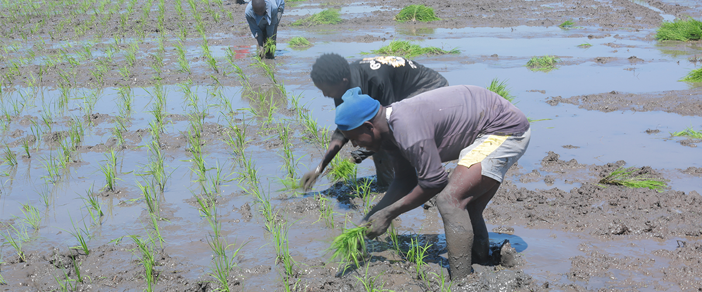
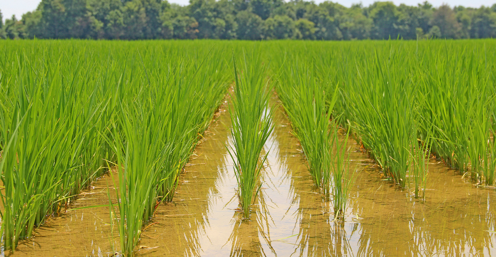
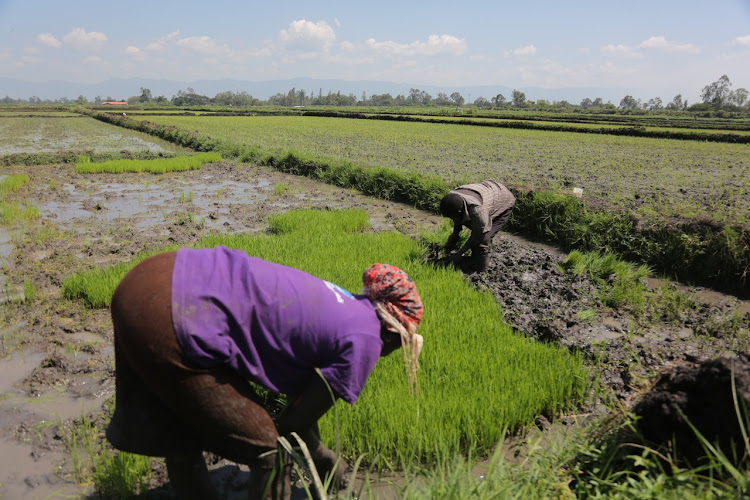
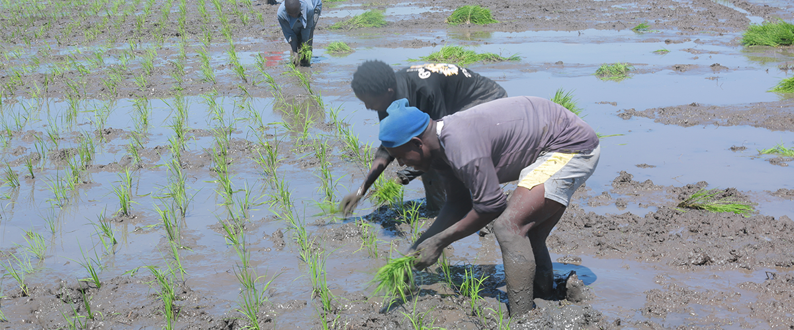
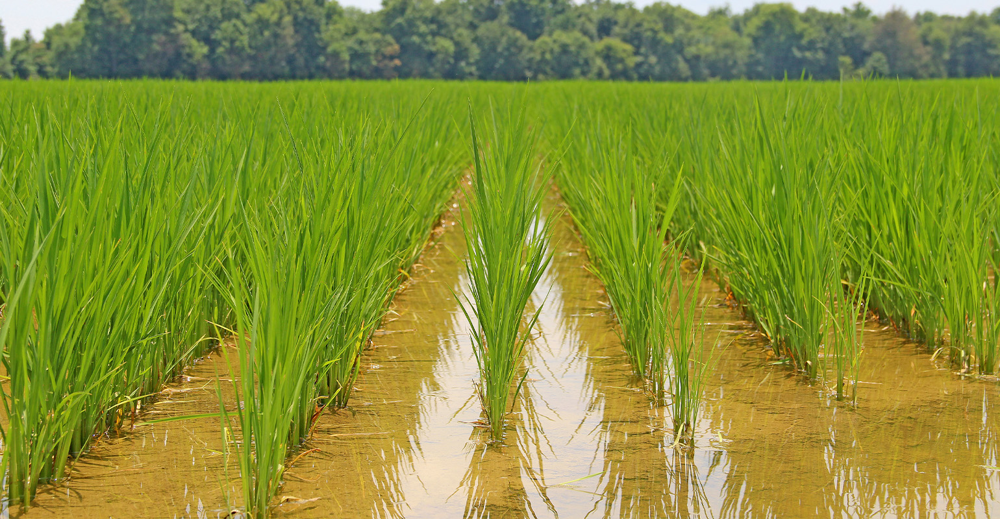
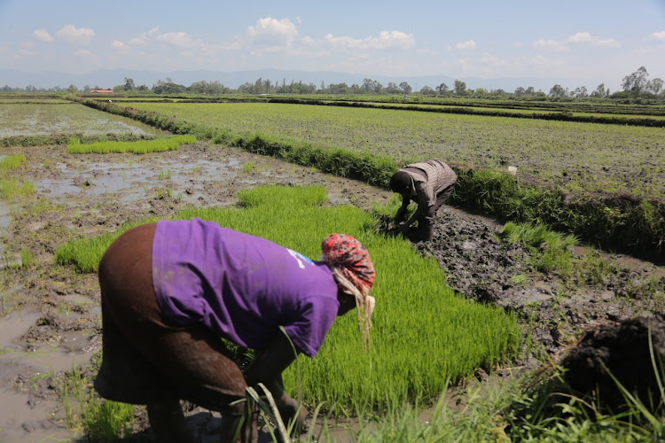
🌊 Day 2: Wednesday 6th Lake Victoria, Dunga Beach, Kisumu Port, Impala Sanctuary, Kisumu Museum,
Learning Areas:
- Role of the Kisumu Port as a hub for water transport
- Importance of lake transport for trade and connectivity
- Shipyard and the ship making process
- Wildlife conservation and tourism at the Impala Park
- Weather and climate around the lake region
- Fishing methods used in lake Victoria
- Luo culture and way of life
- Careers in marinetime transport and port management
- Enjoying boat ride and a sumptous plate of tilapia with ugali at the Dunga Beach
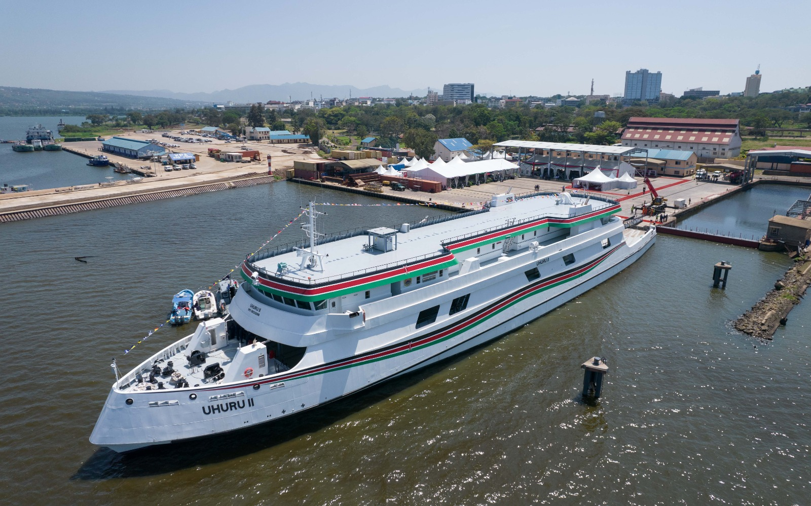
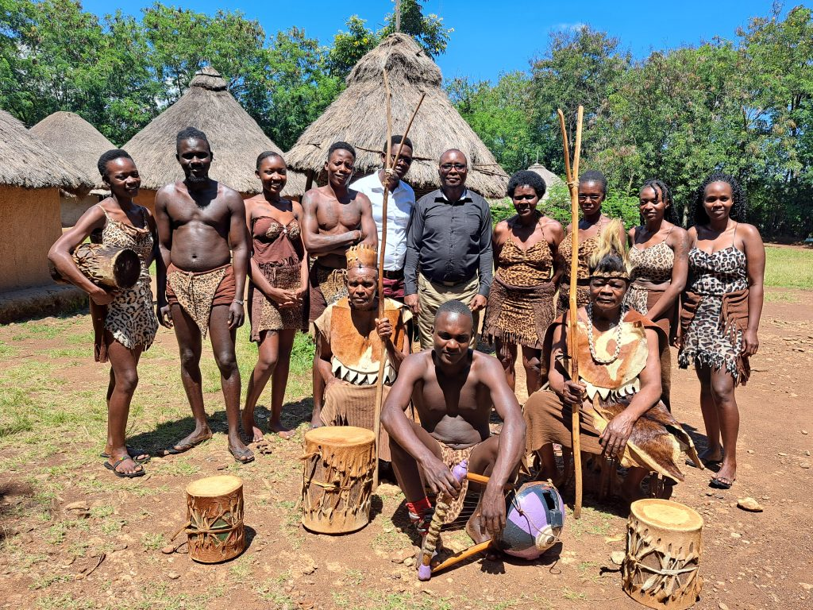
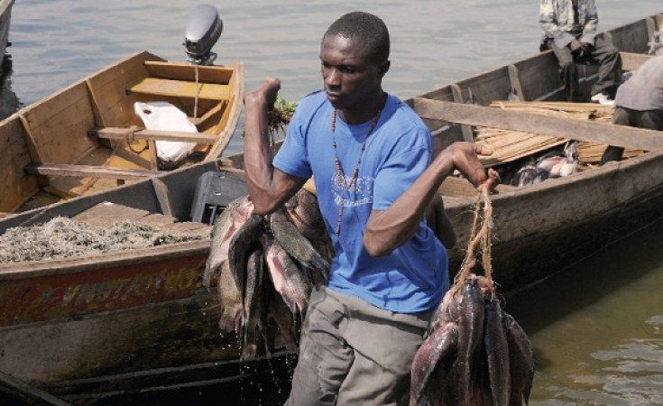
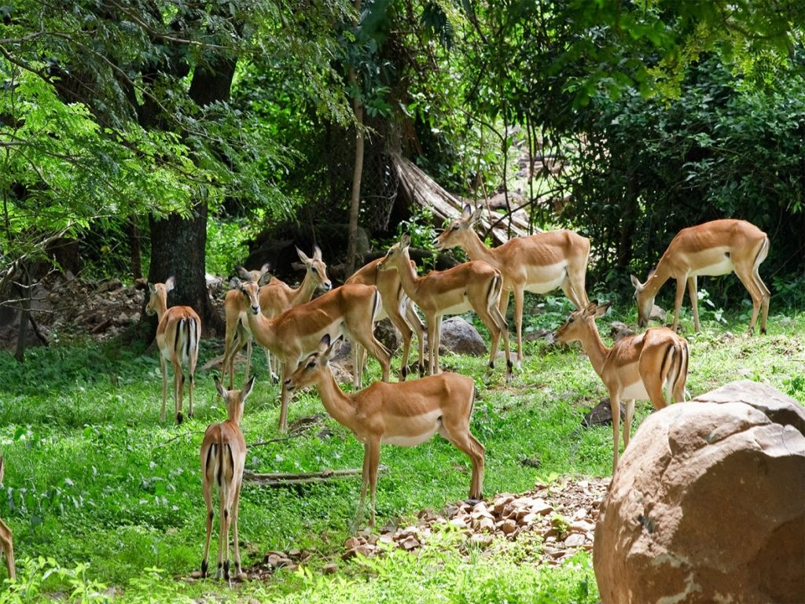
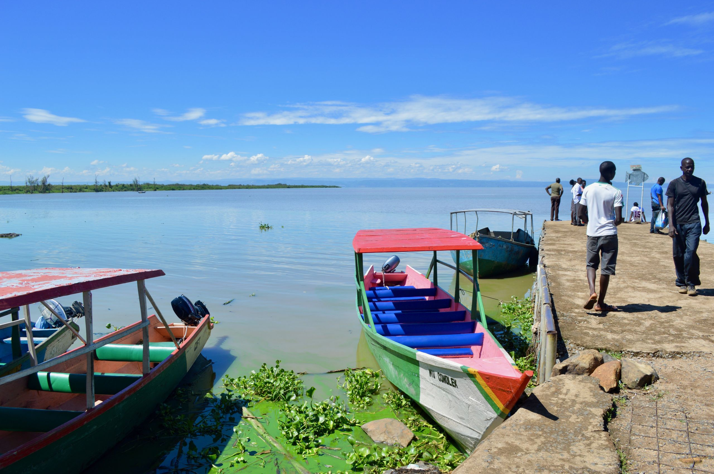
🏠 Day 3: Wednesday 7th Kit Mikayi, Usenge Uhanya Beach, Jaramogi Foundation
Learning Areas:
- Cultural significance of Kit Mikayi (First wife's stone) to the Luo culture
- Importance of preserving cultural heritage sites.
- Tourist Attraction sites around the area
- Economic impact of the site to the society
- Inland fishing at the Uhanya beach
- Onshore fish preservation methods
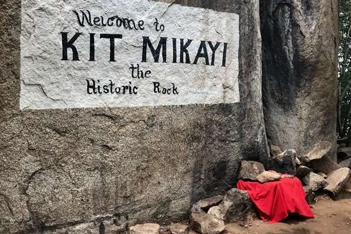
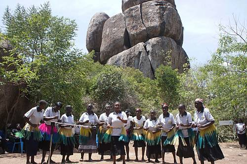
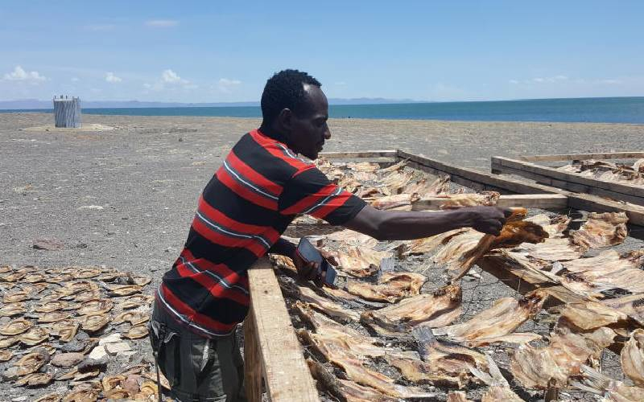
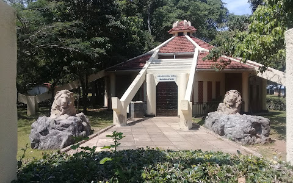
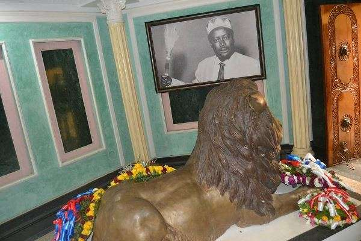
🚌 Day 4: Friday 8th Return Journey
- Early morning breakfast and prayers
- Embarking on the journey back to Nairobi by 7:00 AM
- Stoppages in Kericho and Nakuru
- Arrival time in school approximately by 6:00 PM
- Picking up of the learners by their parents